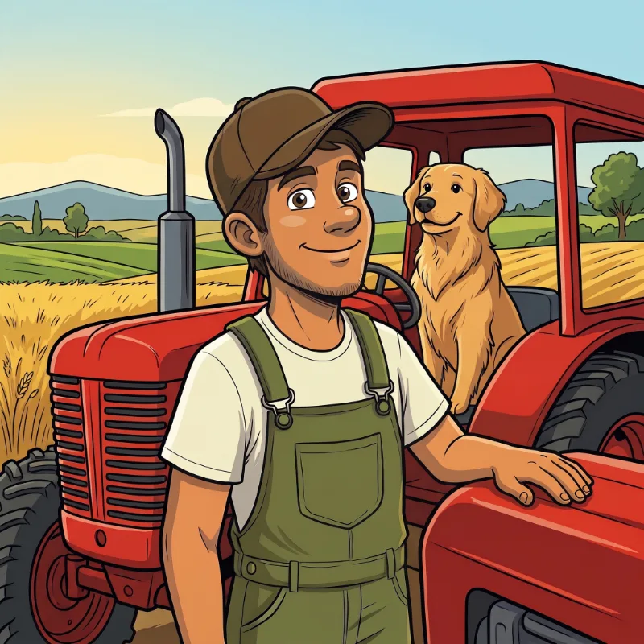
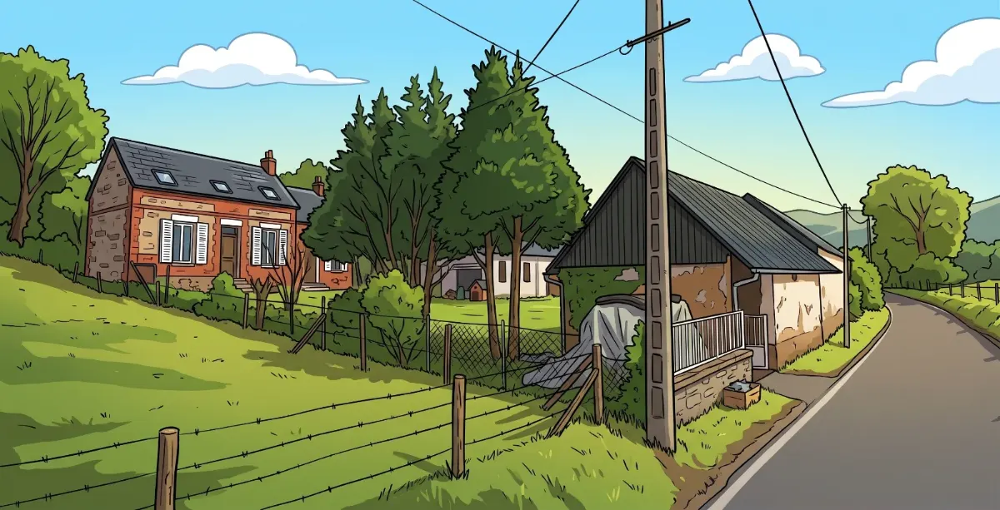
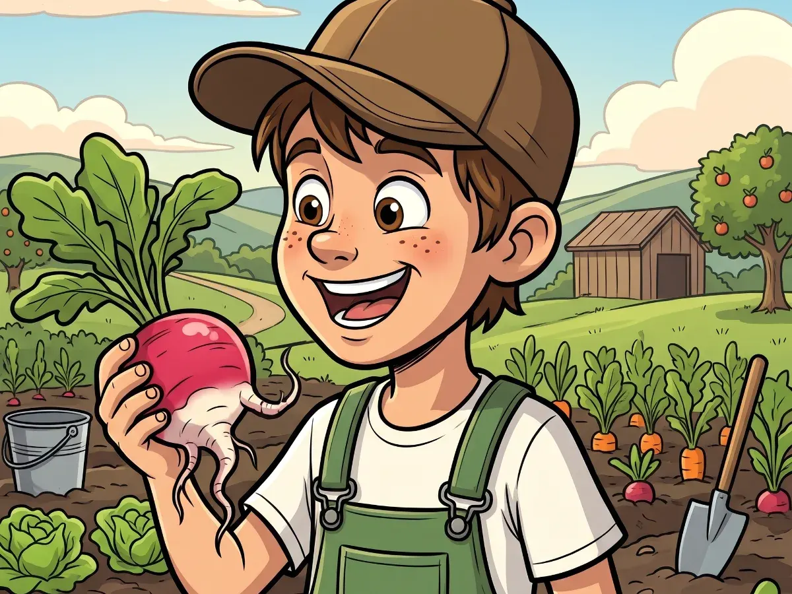
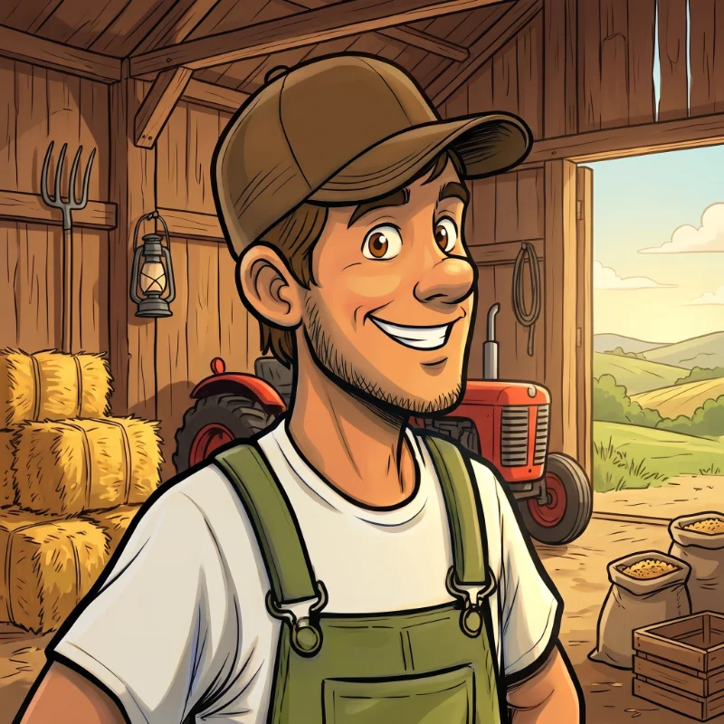
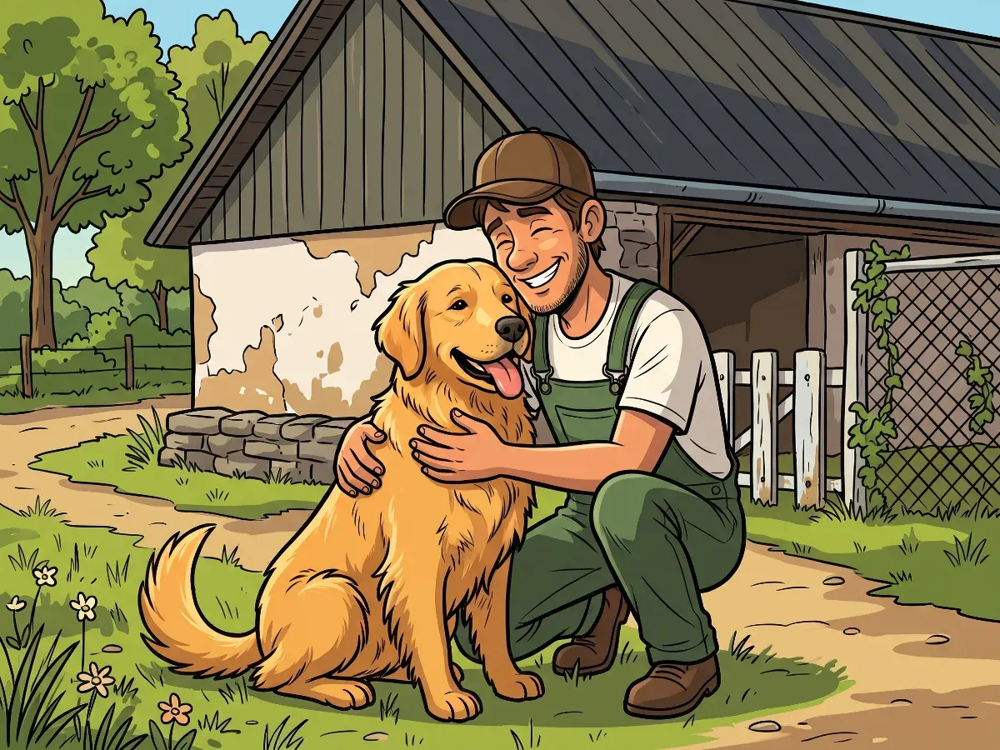
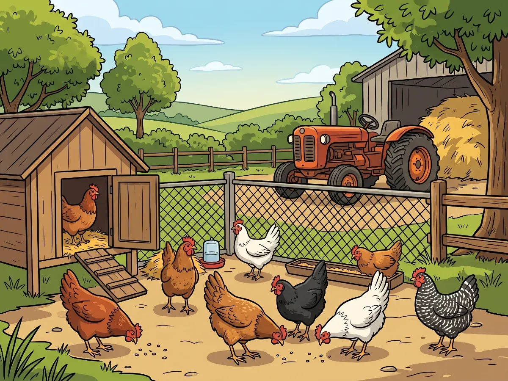
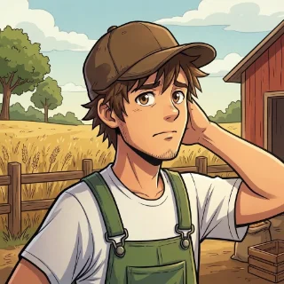
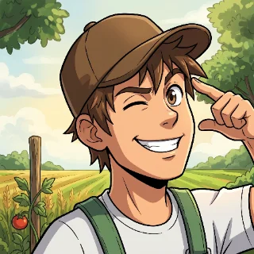

ぼくのおはなし
こんにちは！ぼくはトム。フランスの北にあるソンム県の、フレットキュイスという小さな村で農家をしているよ。Sainosのどのページでも、きみに話しかけているのはぼくなんだ。さあ、ぼくのおはなしを聞いてね！


ぼくの家、ぼくの農場
これがぼくの赤いレンガの家。いなかの小さな道のそばにあるよ。すぐとなりには道具をしまっておく古いなや、そのうらにはピルーの犬小屋があるんだ。フレットキュイスには、家が少しと、見わたすかぎりの畑…それに、風がたくさん！ここではみんながしりあいだよ。トマトがじゅくすと、ぼくはおとなりさんにおすそわけして、おかえしにハチミツやジャムをもらうんだ。

ぼくが小さかったころ
ぼくはこの農場で、弟といっしょに大きくなったよ。ぼくが6さいのとき、お父さんとお母さんが小さな畑をまかせてくれたんだ。ラディッシュのたねをまいて…毎朝、学校に行く前に、育っているか見に行ったよ！はじめてのラディッシュはぐにゃぐにゃに曲がっていたけど、とってもおいしかったんだ。

農場でのぼくの一日
季節ごとに、ちがう仕事があるんだ。ぼくの一年をしょうかいするね。
- 春たねをまいて、小さななえを菜園に植えるよ。
- 夏トマトやズッキーニ、イチゴをしゅうかくするよ…それに、水やりもたくさん！
- 秋果樹園でリンゴやナシをもいで、カボチャをとり入れるよ。
- 冬果物の木のえだを切って、春にまくたねのじゅんびをするよ。

ぼくの犬、ピルー
ピルーはピレニアン・マウンテン・ドッグ（フランスでは「パトゥ」ってよばれているよ）。大きくて、雪みたいに真っ白で、もふもふなんだ。パトゥは番犬で、ピルーはぼくのニワトリたちを自分の家族みたいに守っているよ。ピルーはどこへでもぼくについてくる。果樹園にも、トラクターにも、ニワトリ小屋の入り口までもね。ピルーのいちばん好きな仕事は？ぼくのなえをつつきに来るカラスを追いはらうことさ！

ぼくのニワトリ
ニワトリは9羽いるよ。ココット、ポレット、ビスコット、プラリーヌ、ノワゼット、プリュム、グルナード、キャラメル、そしてなかまのボス、マダム・ローズ。毎朝、まだあたたかいたまごをあつめるんだ。ニワトリたちは菜園の野菜のかわを食べて、そのおかえしに、すばらしいひりょうをくれるよ！
ぼくの農場
ぼくの農場には3つの場所があるよ。あそびに来てね！

ぼくのいちばんの大しっぱい
ある日、ぼくはミントを菜園の土に、そのまま植えちゃったんだ。大まちがい！ひと夏で、ミントはイチゴの下までぜんぶうめつくしてしまった。それからは、ミントはいつも植木ばちで育てているよ。きみもおぼえておいてね！

きみはどう？
ぼくみたいな季節のプロになりたい？毎月のチャレンジにちょうせんして、いろんなページでバッジをあつめよう。